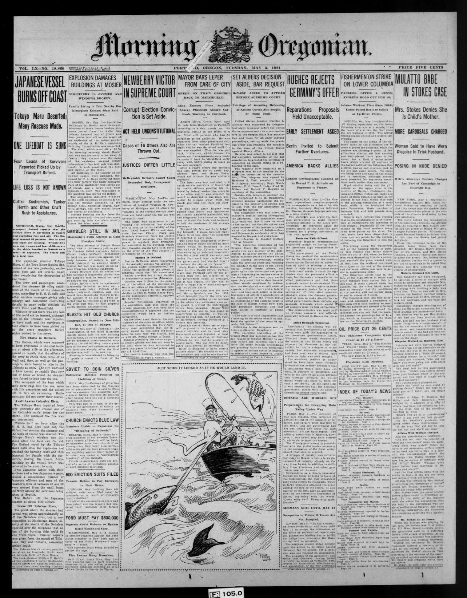
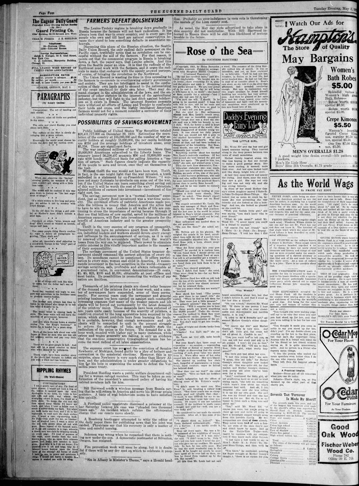
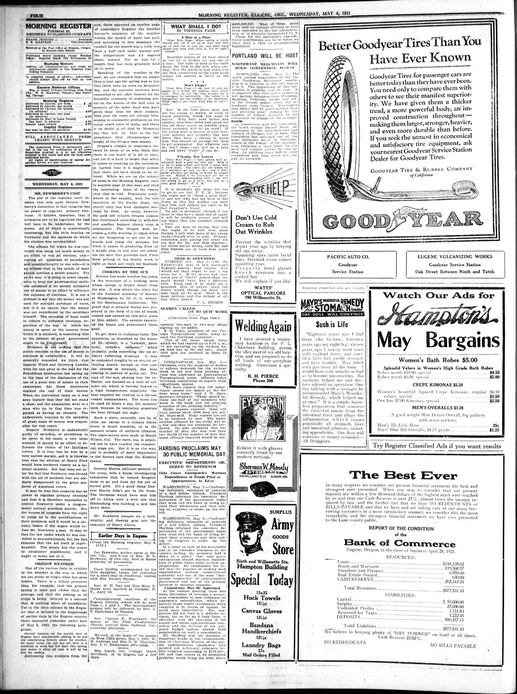
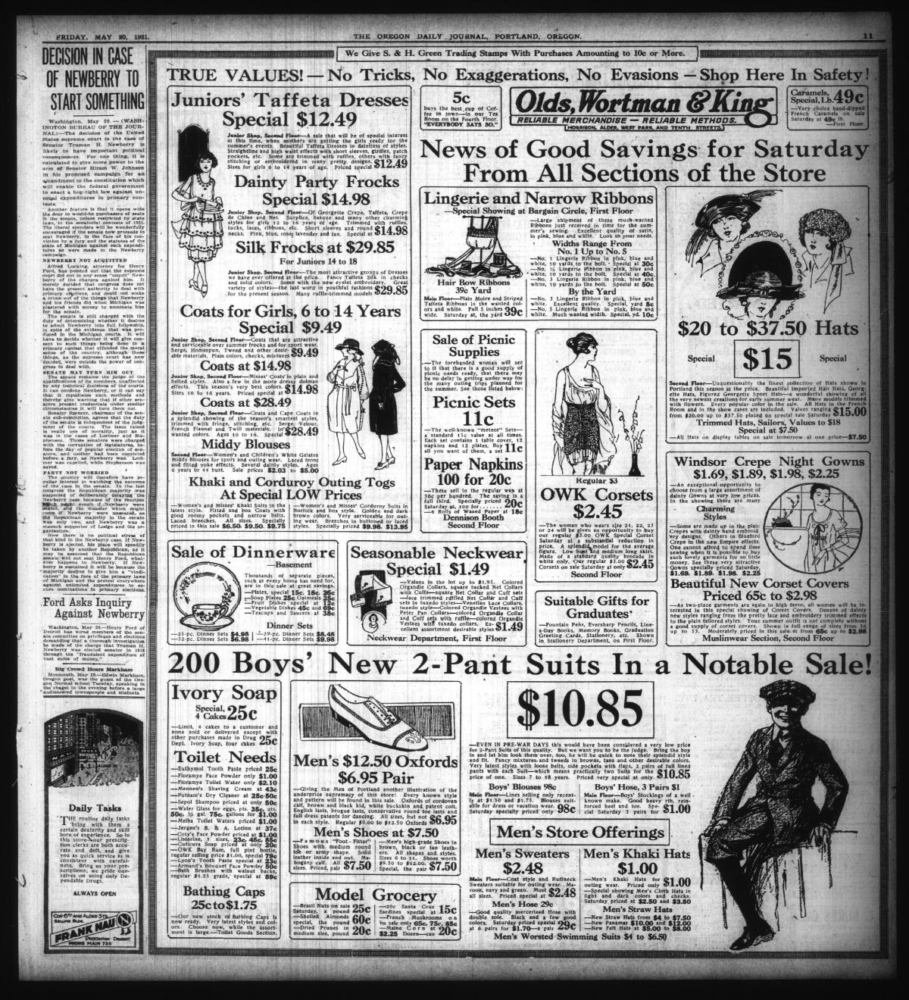

HN HN-425 · May 2, 1921 · Crime, Law & Justice > Trials, Convictions & Acquittals > Appeals
Source: Indianapolis Times, p. 1 — original page; Newberry v. United States, 256 U.S. 232.
Report: The front page announced that the U.S. Supreme Court had cleared Senator Truman H. Newberry of his federal election conviction, declaring the statute underpinning the prosecution invalid as applied.
Assessment: The judgment reversed the conviction and sentence described in HN-420. It does not mean every allegation about campaign finance was affirmatively disproved, only that this criminal conviction did not stand. Such distinctions are essential when following sensational criminal-political reporting.
Authentic images retrieved from Historic Oregon Newspapers (University of Oregon). Article crops are located using the archive's own OCR word coordinates and rendered at native crop resolution; article clips are assembled from the archive's own article-block images; page scans are reduced-size access renditions. No images were generated, mocked, or retouched.




Not yet acquired. Queued for provider-specific acquisition testing (see source-acquisition manifest).
URL (preserved verbatim): https://newspapers.library.in.gov/?a=d&d=IPT19210502.1.1
Saved research report: Historical_Newspaper_Event_Research_403-427_2026-10-23.md
Evidence note: A newspaper report means a historical publication made a claim; it does not establish that claim as fact. Contemporary reporting is separated from later scholarly context and our own assessment.